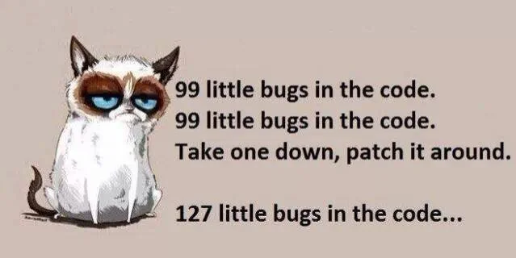
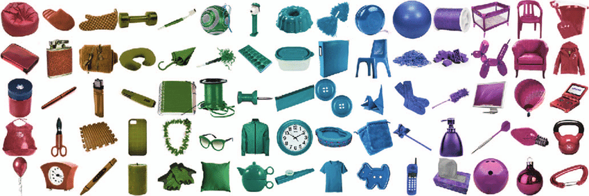

Creative Programming:
Data Representation
Lecture 7
(Re)visiting slides?
You can jump to any slide with the menu to the (bottom) left.
Did you miss a slide or want to revisit? Open the narration tab while studying to get an explanation of difficult slides.

Part 2 of Creative Programming
- We are now officially in the “Data + Project” stage!!!
- One last assignment
- To respect your time, this final assigment is shorter
- Heavily recommended to go through the first part as debugging is critical for your project
But first!
- We have a few lectures left and some extra room for requests
- Please fill out the menti so we know can tailor the remaining lectures to your needs: https://www.menti.com/ (code: 1234 5678)
Debugging
Why this matters
- Seeing your questions and assignments, debugging seems the most challenging part
- Let us spend some time on practicing debugging to prevent getting stuck with your project later

Debugging mindset
- Bugs are normal: every programmer debugs
- Avoid random changes; test one hypothesis at a time
- Keep changes small so you can isolate cause and effect
Practical debugging workflow
- Reproduce the bug consistently
- Reduce to a small example
- Check console errors first
- Log key variables
- Fix one issue at a time
- Re-test and remove temporary logs
Debugging Practice
Class Assignment: Debug Party
- We will go through four slides with buggy sketches.
- Per slide you will have 10 minutes to identify and fix the bug.
- Use the debugging strategies we discuss to find the issue.
When there is no output at all
- First suspicion: JavaScript error stopped execution
- Open browser inspect tools and check the Console tab
- Look for red errors and line numbers
- Fix the first error first; later errors are often side effects
[1/5] Typical “no output” causes
- Missing
}or)in a function - Typo in function names, e.g.
backgrounnd() - Drawing white shapes on white background
- Canvas created outside
setup()by mistake
[2/5] If visuals look wrong, inspect values
- Use
console.log()to inspect variables while running - Log before and after updates
- Start with the variable you think is wrong
- Keep logs focused (too many logs create noise)
[3/5] Scope problems
- A common bug is when trying to access variables not in scope
- Variables in one function are not automatically available elsewhere
- If
draw()needs a variable every frame, define it globally
[4/5] Loops and unexpected values
- Loop boundaries are common bug sources
- Check start, stop, and increment carefully
- Off-by-one errors are very common (
<vs<=) - Log loop variable
ifor first few iterations
[5/5] NaN and undefined bugs
undefinedmeans variable/value missingNaNmeans “not a number” (usually bad math input)- Usually means a variable is not initialised or has the wrong value
Objects
How have we stored data?
- Variables store a single value, arrays store lists
- Our data has always been structured attribute-wise, e.g.
xs[i],ys[i],speeds[i] - This can get confusing when we have many attributes for many items
Objects in the real world
- A bike has properties (color, speed, position)
- A bike has behaviours (accelerate, brake, turn)
- We can model many things this way: cars, elements of graphs, etc.
A ball
- A ball has properties:
x,y,size,color - Instead of having these in arrays, we would like these to be grouped together
- This is what an object does: it groups related data together
Why not only variables/arrays?
- Variables and arrays are great, but parallel arrays can get confusing
- Example:
xs[i],ys[i],speeds[i],sizes[i] - Objects keep all info for one entity in one place
Objects in the code world
- In JavaScript, an object groups related data and behaviour
- This helps us keep code organized
- Especially useful when we have many similar things
Objects in arrays
- We can make a factory function to create objects
- Then we can store many objects in an array
- This is a common pattern for games, simulations, and data visualizations
Methods on objects
- Objects can also contain functions, called methods
- Methods can directly use object data via
this
Objects!
Class Assignment: Thinking with Objects
- Make an object, e.g. a flower or car, with a few properties (position, color, size).
- Write a method to draw the object on the canvas.
- With a factory, can you make an array of these objects with different properties?

Loop loop loop loop loop loop loop loop loop
Loo(p)(k)ing back
- We have used for-loops for repetition
- Are there other ways to iterate over code?
Other kinds of loops
whilerepeats as long as a condition is trueforEachruns a function for each item in an array- Both can be more readable for certain coding patterns, but they have their own pitfalls
The while loop
- Use
whilewhen you do not know how many retries you need - The code will repeat as long as the condition holds true
- Always ensure the loop condition can become false
while debugging checklist
- Frozen sketch? Suspect an infinite
while - Check the condition and the variables that must change
forEach loops
forEachis great when you want to run the same update/draw steps for every element- It reads close to natural language: “for each elements, do this”
- Syntax is complicated:
array.forEach(element => { /* code */ });
forEach example
- Works especially well with arrays of objects
- Be super careful with the syntax as there is a code block
{}inside the parentheses()!
Loop debugging
- Log only key values (
length,i, one object sample) - Test with a tiny array first (3-5 objects)
- Separate update and draw phases for clarity
- Keep loop bodies short and move repeated logic into functions
Loops
Class Assignment: Loop Lab (while + forEach)
- Create an array of 12+ visual objects (such as bubbles) using a
whilesetup loop. - Update and draw them every frame using
forEach. - Add a way to spawn more of the objects, e.g. key or mouse press.
- Use debugging logs to check the number of objects and their properties as you go!

Creative Programming 2026 Lecture 7 - Ties Robroek - IT University of Copenhagen